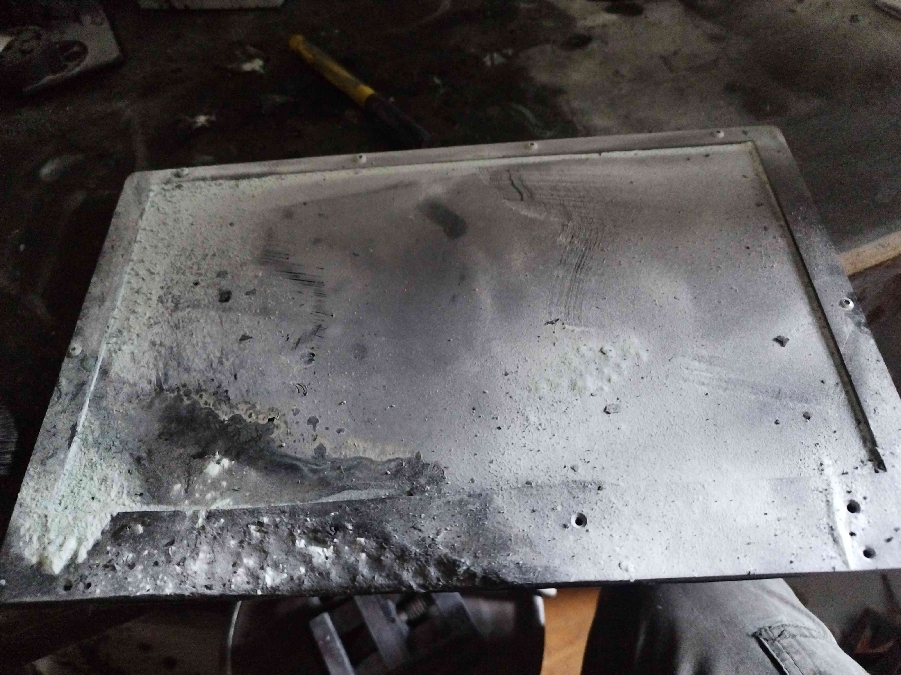
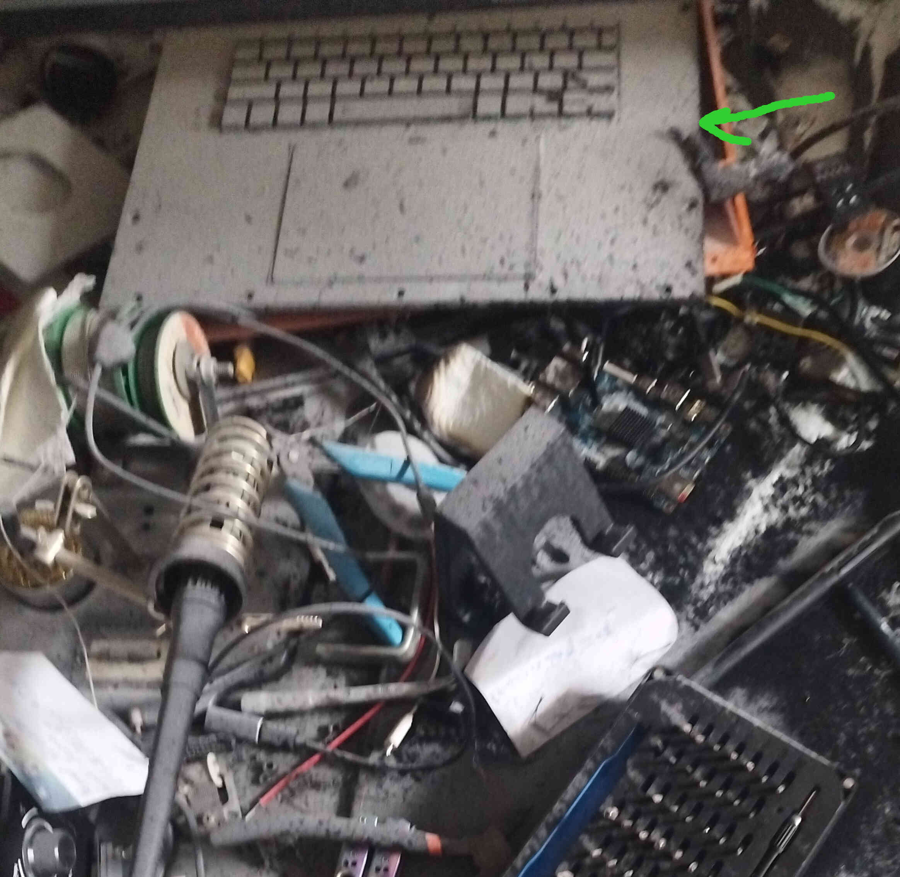
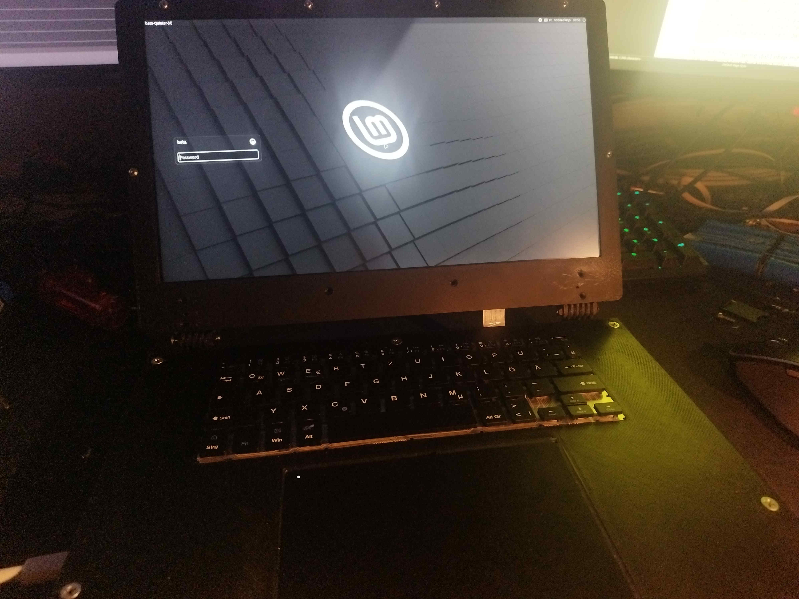
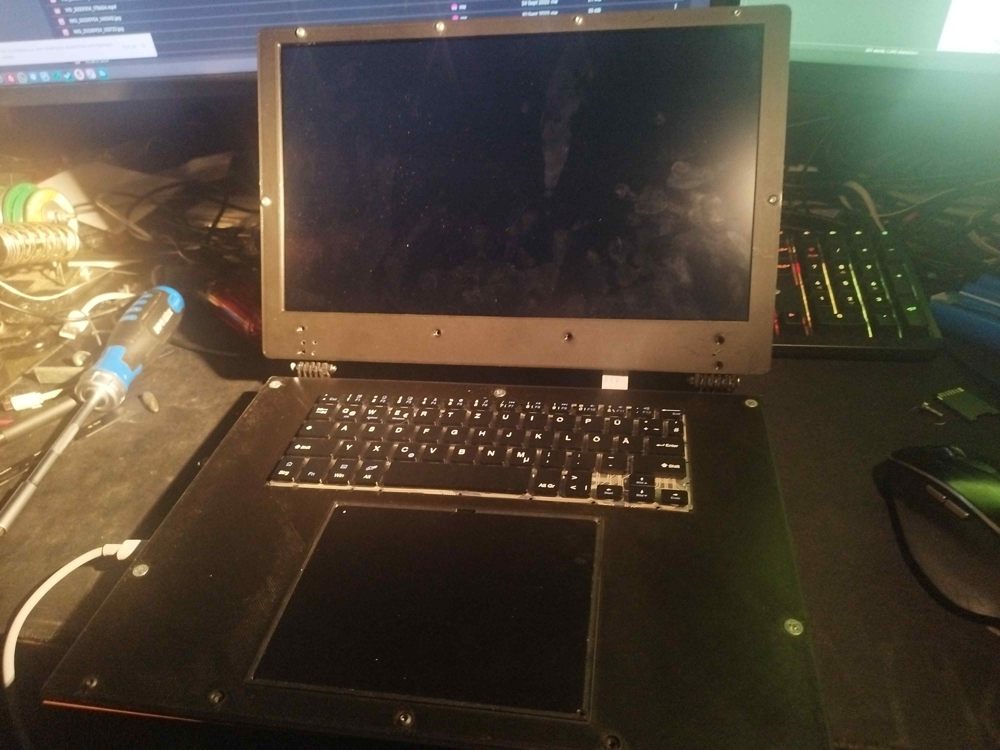
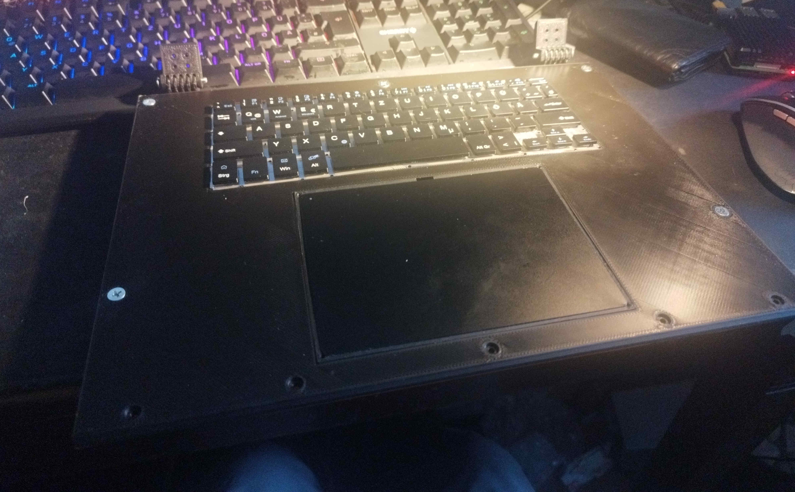

Mein Laptop
Mein selbstgebauter Laptop und sein abruptes ableben, vom 06.10.2024
Hallo, in diesem Beitrag geht es um meinen DIY Laptop den ich mir selber gebaut habe.
Wie manche wissen, ist im Juni eine Powerbank in meinem Zimmer deflagriert (Deflagration beschreibt einen Verbrennungsprozess der zu langsam für eine Explosion und zu schnell für einen regulären Brand ist).
Alles was auf meinem Schreibtisch war wurde entweder von den Flammen oder dem ABC-Pulver vom Feuerlöscher vernichtet. Darunter zählt mein PC, 2 meiner 3 Monitore und eben auch mein Laptop. Hier ein Bild:


Das sind die Reste von meinem Laptop. Der Laptop brannte nach weniger als 2 Wochen nach Fertigstellung ab. :c. Dieser Laptop war über 3 Jahre in Arbeit und hat mich zahllose schlaflose Nächte gekostet.
Über den wirklichen Preis des Laptos rede ich jetzt mal nicht, aber er war schon 4-stellig und es tut weh wenn ich nur dran denken muss. So sah der Laptop aus als er fertig war:
 Der Laptop war 100% DIY. Er hatte ein SBC mit einer N100 CPU und 16GB RAM, eine 1TB SSD und ein wunderschönes FHD 13,3 Zoll IPS Display das so schöne Farben hatte, dass OLED Displays neidisch würden.
Natürlich sind die specs für einen Laptop der mich 1500€ leichter gemacht hat schwach, aber dafür habe ich auch einige hundert stunden den laptop designed, gedruckt, redesined, gelötet, verkabelt.
Wie gesagt, demnächst kommt ein How-to und zum Abschluss möchte ich noch ein paar Bilder vom Laptop teilen.
Der Laptop war 100% DIY. Er hatte ein SBC mit einer N100 CPU und 16GB RAM, eine 1TB SSD und ein wunderschönes FHD 13,3 Zoll IPS Display das so schöne Farben hatte, dass OLED Displays neidisch würden.
Natürlich sind die specs für einen Laptop der mich 1500€ leichter gemacht hat schwach, aber dafür habe ich auch einige hundert stunden den laptop designed, gedruckt, redesined, gelötet, verkabelt.
Wie gesagt, demnächst kommt ein How-to und zum Abschluss möchte ich noch ein paar Bilder vom Laptop teilen.
|  |  |

|
 |
Grüße,
Beta β